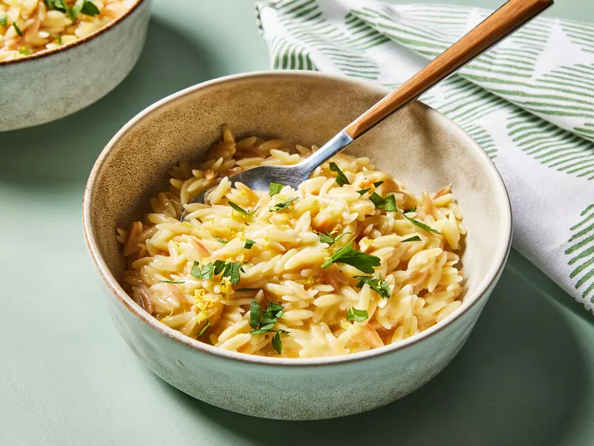

Lemon Orzo

- Prep time
- Cook time:25 min
 Serves 8 people.
Serves 8 people.
 Step 1
Step 1
Gather all ingredients.
Step 2
Melt 1 tablespoon butter in a large nonstick skillet over medium. Add orzo, and cook, stirring occasionally, until light golden and toasted, about 2 minutes.
Step 3
Stir in chicken stock, 1 1/2 teaspoons lemon zest, salt, and garlic powder. Bring to a simmer over medium-low. Simmer, stirring occasionally, until orzo is al dente and most of the stock is evaporated, 10 to 12 minutes.
Step 4
Remove from heat, and fold in 2 tablespoons lemon juice, Parmesan cheese, and remaining 1 tablespoon butter until butter is melted. Garnish with parsley and additional lemon zest.

Ingredients:
For the pastry (makes double):- 500g plain flour, plus extra for dusting
- 140g icing sugar
- 250g unsalted butter, cubed
- 4 egg yolks
- 5 eggs
- 140g caster sugar
- 150ml double cream
- juice 2-3 lemon (about 100ml/3.5fl oz) and 2 tbsp lemon zest